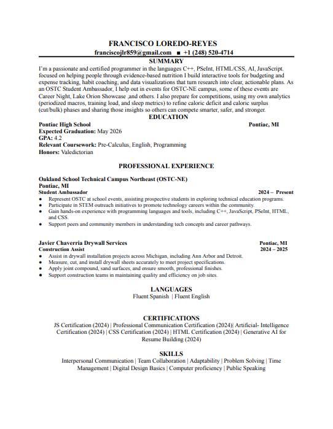
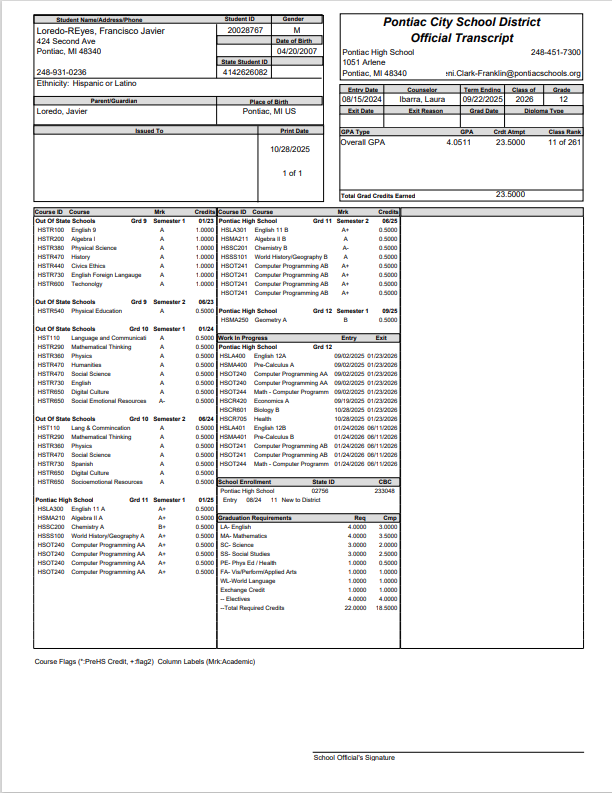
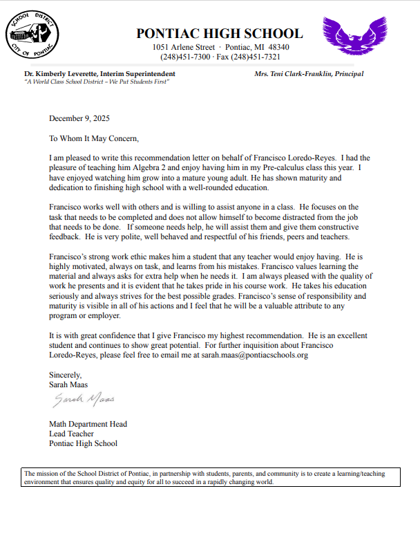
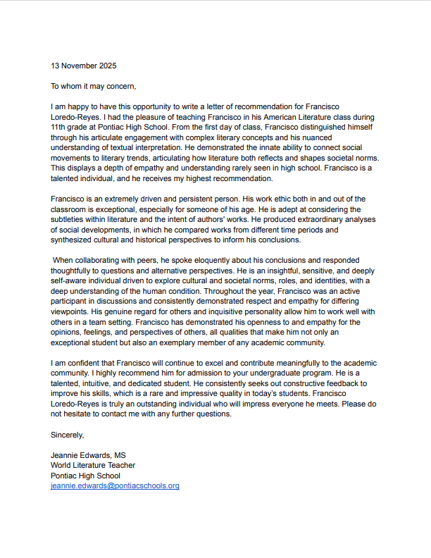
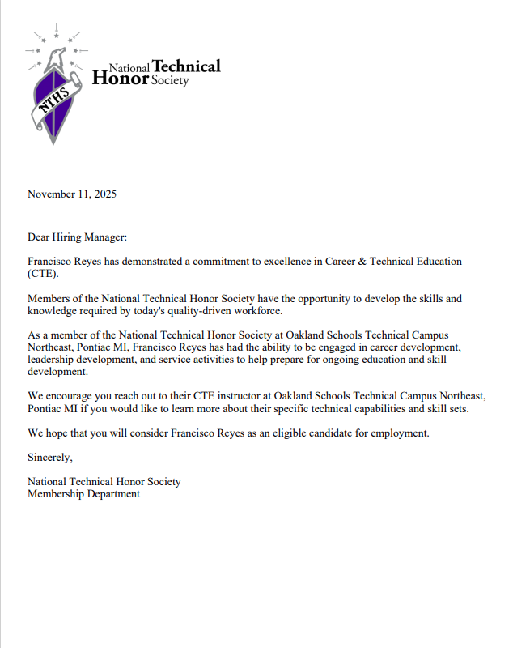

Education
My school background, technical program, and the documents I use for applications, scholarships, recommendations, and future opportunities.
Pontiac High School (PHS)
Location: Pontiac, Michigan
Expected Graduation: May 2026
I’m finishing high school while also building a technical portfolio. I’m focused on staying consistent with grades and keeping my work organized through projects, certifications, and important documents.
What I’m focused on
- Keeping my school work clean and organized
- Building projects that actually work and show effort
- Improving my writing, presentations, and communication
- Preparing for graduation and my next steps after high school
Strengths in school
- Consistent effort and staying on top of deadlines
- Learning tools fast and figuring things out
- Redoing work until it looks clean and complete
- Taking school seriously while building my future plan
OSTC – Computer Programming
I’m enrolled in Oakland Schools Technical Campuses (OSTC) for Computer Programming. This is where I work on certifications, programming skills, and real projects that connect to my portfolio.
Program focus
- Web development with HTML, CSS, and JavaScript
- Programming and problem solving with Python
- Using GitHub to organize and show my work
- Building projects that are useful and presentable
- Practicing documentation and technical communication
How OSTC connects to my portfolio
Most of the certificates and projects on my site come from the skills I’ve been practicing through OSTC. This portfolio is my proof of what I can do, not just a list of skills.
My Documents
These are separate from my PHS and OSTC sections. This area is only for important PDFs I use for applications, scholarships, recommendations, transcripts, and future opportunities.





